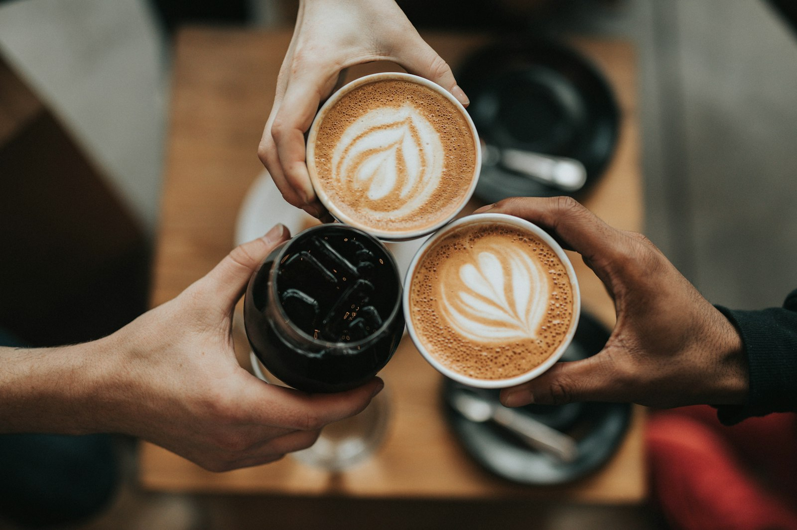
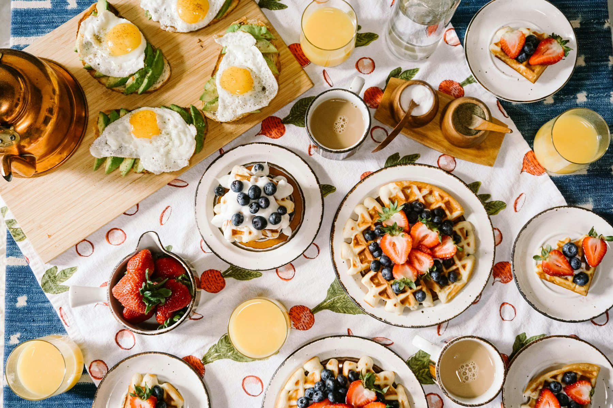
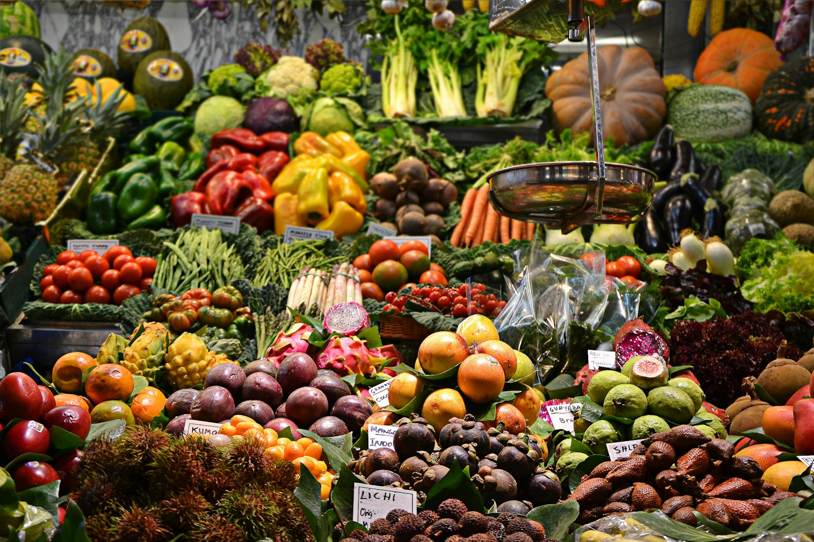
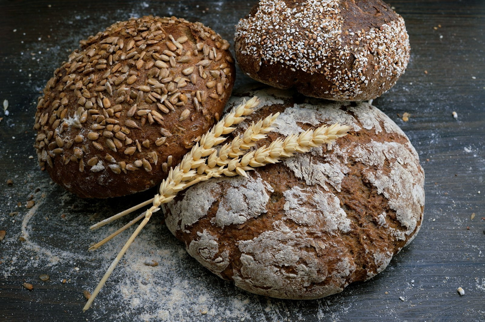
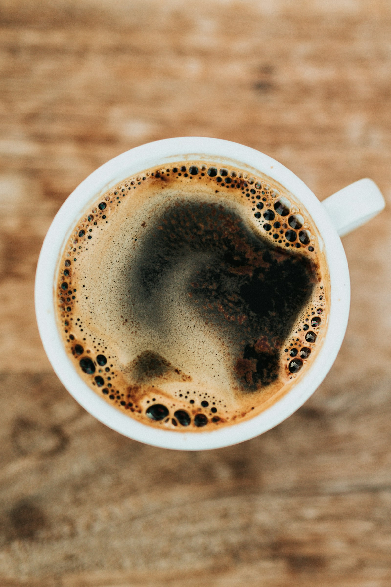
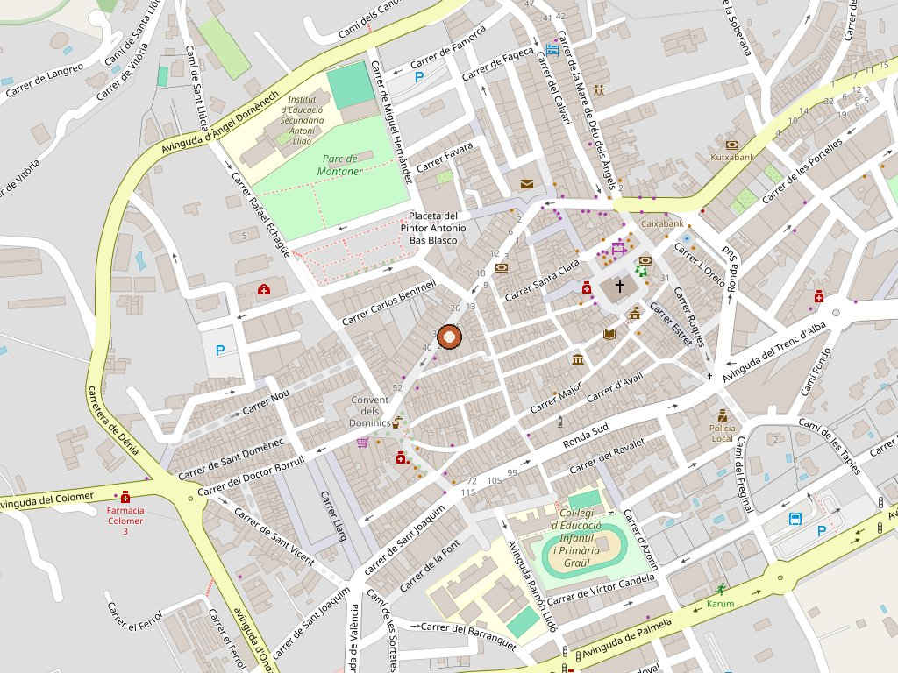

Xàbia · Casco antiguo
Sorbos
Café · Brunch & Lunch
Un café en el casco antiguo de Xàbia para desayunar, hacer brunch o almorzar.
A café in Xàbia’s old town for breakfast, brunch or lunch.

En el casco antiguo de Xàbia
In Xàbia’s old town
Sorbos Café, Brunch & Lunch está en el corazón de Xàbia. Esta página es una demo para mostrar cómo podría verse una web sencilla del local.
Sorbos Café, Brunch & Lunch is in the heart of Xàbia. This page is a demo of how a simple site for the café could look.
Un perfil público del negocio indica que lo fundaron Aarón Lobo y Alejandro Cantillo, y que la cocina prioriza ingredientes frescos de proximidad, con compras en el mercadillo de Jávea los jueves por la mañana.
A public profile of the business says it was founded by Aarón Lobo and Alejandro Cantillo, and that the kitchen favours fresh, local produce, with shopping at Jávea’s Thursday morning market.
Esos datos salen de una ficha pública, no de una entrevista con el local. Cualquier otro detalle se confirmará con ellos.
Those details come from a public listing, not from an interview with the café. Anything else will be confirmed with them.



Horario
Opening hours
El horario concreto no está confirmado aquí: las fichas públicas no coinciden. Conviene confirmarlo en el local, por WhatsApp o en Instagram.
Specific opening hours are not confirmed here: public listings do not agree. Please confirm in person, on WhatsApp or on Instagram.
- Lunes
- [horario]
- Martes
- [horario]
- Miércoles
- [horario]
- Jueves
- [horario]
- Viernes
- [horario]
- Sábado
- [horario]
- Domingo
- [horario]
Dónde estamos
Where to find us
03730 Xàbia / Jávea, Alacant

Abrir mapa interactivo (OpenStreetMap)
Ver mapa más grande (OpenStreetMap) View a larger map (OpenStreetMap)
Síguenos en Instagram
Follow us on Instagram
Novedades y el día a día en el local, en @sorbosjavea.
News and daily life at the café, at @sorbosjavea.
@sorbosjavea